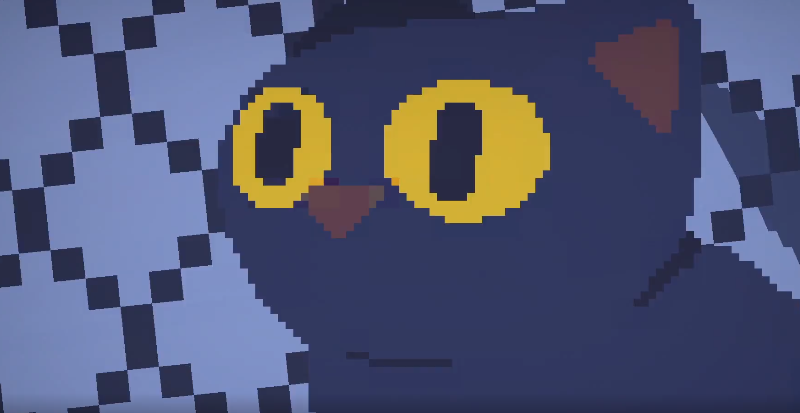

Why bother? It’s a 2D game!
Note: videos in this post are recorded in-game at 1080p/60FPS with bitrates between 5-10M, unless explicitly stated otherwise. Please view them in fullscreen to get the experience closest to the in-game experience.
The improvements made by our implementation should be obivous.
Adderss Aliasing
point samplers
One source of aliasing that we’ve addressed early on in devlopment is the naive use of point samplers.
When rendering our little pixel game on player’s screen, we definitely want to preserve the texel-by-texel sharpness of our artists’ precious sprites. This immediately rules out the usage of the bilinear sampler, as the results would have been too blurry, especially if zoomed in too close(i.e. under magnification).
A no-brainer replacement would be the good old point sampler.

Perfectly sharp, right? However, let’s not forget why bilinear sampling got introduced into games in the first place: point sampling is “blocky” under movement:
Notice the abrupt jump of the actually sampled texels, especially along sprite edges. This is extremely noticeable if the camera is moving slowly, a common scenario when the camera is decelerating to a full stop.
The solution is to introduce a new sampling procedural that does the following:
- if a pixel completely falls inside one texel, sample it simply as a pont sampler would, retaining the sharpness of the underlying sprite
- if a pixel crosses texel boundaries, smoothly interpolate among the underlying texels based on coverage, resulting in a smooth transition to get rid of the abrupt jump
The sampling procedural as a whole then gets to be both sharp and smooth.
After accounting for 2D scaling and rotation, the implementation detail can get a bit messy, at least my attempt was, so I’m not going to spell it out here confusing people… Please refer to Casey Muratori’s talk for an in-depth explanation on this topic.
minification
If your game is one of those classical-looking pixel games like Celeste, where the render resolution is guaranteed to be at least as big as the underlying texture resolution, then that’s it for the texture sampling part.
Unfortunately no such guarantee exists in our case. All of our sprites are drawn with the assumption of being displayed in 1440p under normal camera sizes, a resolution requirement that lots of our target platforms ain’t gonna met. Not to mention that the camera gets zoomed out quite frequently during gameplay. Minification thus kicks in, furthur complicating our sampling problem.
Let’s look at an example with target resolution 1280x720, notice high-frequency glitches on the wall:
Fortunately, mipmapping is already there for the rescue. The basic idea is to do a modified version of trilinear sampling, replacing only the ceiling mipmap sampling with our modified sampler:
- determine the mipmap depth from uv derivatives
- find the ceiling(smaller) and floor(larger) mipmap slice based on depth
- use the above-mentioned modified sampler to sample the ceiling slice
- bilinearly sample the floor slice
- bilinearly interpolate results from the two slices based on depth to get the final result
low-res light buffer
HAAK features a 2D lighting system where 2D lights are first rendered into a screen-space light buffer, which then got accessed during shading.
In order to achieve a soft-looking shadow boundary as well as to reduce render costs, light buffer are lower-res comparing to the frame buffer, usually half or quarter res depending on the target platform.
Naive upsampling of the light buffer introduces cellular artifacts into the frame buffer, which is again extremely noticable by human eye. Let’s look at the same example in 1280x720, notice how glitchy and blocky the edge of light is:
This can be mitigated by dithering the light buffer sampling uv with a world-space aligned blue noise, replacing the artifacts with a pleasant and consistent looking noise pattern that is a better fit for our environment.
Dithering is a extremly useful technique to addressing banding artifacts, it was utilized extensively in the game. Details about this technique can be found here.
everything else
For the most part during our early-access phase on steam, we were shipping with only the techniques described above (hack our public release branch still is!…). It mostly works fine, only breaking at geometry seams where there is a hard discontinuity between the underlying sampled textures, such cases our texture-only techniques cannot cover.
The most obvious example are walls rendered with Unity’s vanilla TilemapRenderer, meaning that they are just a bunch of tiles(i.e. quad meshes) rendered in adjacent to each other, without fancy features like virtual texturing that might’ve taken care of the seams for us. We’ve taken some special sampling tricks trying to mitigate it, but the problem was still noticable, for example notice glitches along horizontal seams on wall in the following video:
The problem got significantly worse after we switched to a front-to-back rendering pipeline. It was necessary as an optimization step (to utilize early z-culling and stuff) for some mobile platforms we wanted to ship on (looking at you Nintendo Switch).
The problematic side effect is that, in order to actually utilize z-culling, a fragment from an “opaque”-pass object now has to decide between
- either being completely opaque(the fragment gets written into the back buffer completely, both color and z values),
- or being completely transparent(the fragment gets completely discarded).
Good old alpha blending no longer applies.
Notice that, unlike a traditional 3D setup, the “opaque”ness of our objects is not a given across the whole mesh. Instead this “opaque”ness information is encoded in the texture as well. We have to wait until the texture being sampled in the fragment shader, only then can we decide what to do about it.
However, it is almost guaranteed that the sampled alpha wouldn’t be a 0/1 clear-cut:
- either the underlying texture has semi-transparent alpha values baked in (it is hard enforce any policy on artists about how to draw their pixels)
- or we are sampling across a 0/1 border on the texture and, as the result of our sampling methods, an interpolated semi-transparent alpha value gets returned anyway.
So we have to find a way to deal with these semi-transparent alphas, and report them back as 0/1 clear-cuts. Alpha clipping at a uniformly chosen threshold(e.g. 0.5) will do, but doesn’t look so good. So we utilized image dithering instead. (The terminology gets a bit confusing here, as we’re not dithering the sampling uv as with the light buffer case above, but utilizing a halftoning technique called image-independent dithering, with another world-space aligned blue-noise texture.) It handles large semi-transparent regions more gracefully, even allows us to smoothly dissolve an “opaque” object by alpha, in a way that is visually closer to alpha-blending:
Anyway, these 0/1 cuts introduce aliasing along the edges of the “opaque” objects. Dithering with world-space noise makes these artifacts extremely noticable when camera is moving. These new artifacts, coupled with the already existing geometry aliasing, bacame too much to ignore. Notice the glichness along object edges in the following 2 examples.
We finally called TAA for help:
We won’t outline TAA as a whole, please refer to this post for the general concepts. It is an comprehensive and complete guide for curious readers unfamiliar with TAA. We followed it almost step by step to get the basics working. From now on we only take notes on specific details that turned out to be new or extremely helpful for us.
We ended up choosing Balten2x3,16 as our camera jittering pattern, coupled with a default blending factor of 0.125. Values are determined by our empherical testing as well as by hints on effective sample count graphed in this survey on TAA.
Color clamping does almost all the heavy lifting on rejecting false histories. However, all three clamping methods we’ve tested yield similiar results, leaving the more complex clamping schemes with no clear benefits.
Velocity buffer turned out to be really useful as well, drastically improving sharpness of moving objects such as the player.
An essential step for us to get right is to retain the overall sharpness of the final image. Let’s first look at a scene rendered without TAA as reference:
then with the most popular Catmull-Rom filter:
While the sharpness is drastically improved compairing to bilinear filtering, we wanted something even sharper. After some experimentes, we landed on another Mitchell–Netravali filter with B=0, C=7/9 (with some corner-cutting). Results are sharp, have no noticable ringing artifacts, while remains temporally stable. It seems to be a good fit for our use case:
Since it is also a bicubic filter just like Catmull-Rom, the same 16 to 9 tap optimization trick popularized by UE4 still apply, yielding the following shader code:
// originally stolen from https://gist.github.com/TheRealMJP/c83b8c0f46b63f3a88a5986f4fa982b1
half4 SampleTextureBicubic9(Texture2D tex, float2 uv, float2 texSize ){
// We're going to sample a 4x4 grid of texels surrounding the target UV coords
// We'll do this by rounding down the sample location to get the exact center
// of our "starting" texel. The starting texel will be at
// location [1, 1] in the grid, where [0, 0] is the top left corner.
float2 samplePos = uv * texSize;
float2 tp1 = floor(samplePos - 0.5) + 0.5;
// Compute the fractional offset from our starting texel to our original
// sample location, which we'll feed into the filter function to get our
// filter weights.
float2 f = samplePos - tp1;
// evaulated from BC-splines when B=0, C=0.7777778,
// sharper than catmull-rom(B=0,C=0.5)
float2 w0 = f*((-0.7777782)+f*((1.555556)+f*(-0.7777779)));
float2 w1 = 1+f*(f*((-2.222222)+f*(1.222222)));
float2 w2 = f*((0.7777776)+f*((1.444445)+f*(-1.222222)));
float2 w3 = f*(f*((-0.777778)+f*(0.7777779)));
// Work out weighting factors and sampling offsets that will let us use
// bilinear filtering to simultaneously evaluate the middle 2 samples
// from the 4x4 grid.
float2 w12 = w1 + w2;
float2 offset12 = w2 / (w1 + w2);
// Compute the final UV coordinates we'll use for sampling the texture
float2 tp0 = tp1 - 1.0f.xx;
float2 tp3 = tp1 + 2.0.xx;
float2 tp12 = tp1 + offset12;
tp0 /= texSize;
tp3 /= texSize;
tp12 /= texSize;
half4 ret = 0.0f.xxxx;
ret += tex.Sample(_bilinear_sampler, float2(tp0.x, tp0.y)) * w0.x * w0.y;
ret += tex.Sample(_bilinear_sampler, float2(tp12.x, tp0.y)) * w12.x * w0.y;
ret += tex.Sample(_bilinear_sampler, float2(tp3.x, tp0.y)) * w3.x * w0.y;
ret += tex.Sample(_bilinear_sampler, float2(tp0.x, tp12.y)) * w0.x * w12.y;
ret += tex.Sample(_bilinear_sampler, float2(tp12.x, tp12.y)) * w12.x * w12.y;
ret += tex.Sample(_bilinear_sampler, float2(tp3.x, tp12.y)) * w3.x * w12.y;
ret += tex.Sample(_bilinear_sampler, float2(tp0.x, tp3.y)) * w0.x * w3.y;
ret += tex.Sample(_bilinear_sampler, float2(tp12.x, tp3.y)) * w12.x * w3.y;
ret += tex.Sample(_bilinear_sampler, float2(tp3.x, tp3.y)) * w3.x * w3.y;
return ret;
}
You can read more about how this optimization works in this article.
As a furthur optimization, we dropped the 4 cornering samples as well, as suggested by Filmic SMAA for their Catmull-Rom implementation. We too haven’t spot any noticeable difference on filter quality.
Compare all 4 filters in a row:
“Transparent”(i.e. tradionally back-to-front alpha-blended) objects are rendered without velocity writes. As such, render results from these objects moving with highspeed, such as electrical wiring or projectile trails, can get quite blurry after TAA. Sometimes this is unwanted (video recorded in 720p):
To retain sharpness we ended up writing into an additional markup buffer, then adjust the taa blending factor accordingly. For example, blending factor is increased if either history or current markup sample is equal to a specific markup ref-value. This concept was again learned from UE4.
Limitations
Sticking with Unity’s vanilla GameObjects and Renderers limits our ability to construct correct velocity buffer for every objects in the opaque pass. For example, getting and retaining correct local to world transforms for moving LineRenderers and TilemapRenderers are just painfully hard, if not impractical at all.
Movements of opaque objects encoded by flipbook animation are also unaccounted by the velocity buffer.
These unaccounted movements introduce incorrect history samples, which can only be partially caught by color clamping, eventually introducing blurryness in the final image.
More complicated workarounds such as more utilization of the markup buffer might help mitigate the issue, but we ended up just not bothering for the moment.
Bonus: temporal upsampling
For devices with lower graphic capabilities such as Nintendo Switch, we were still struggling to hit the 60fps target framerate, despite all the optimization efforts. One of the low hanging fruit was to simply reduce the backbuffer resolution, however if performed naively the result are too ugly to be considered usable. Check this example of directly upsampling from a 1302x742 backbuffer to 1080p:
Now with TAA in place we get another shot: render new frames in lower res, but keep the taa history color buffer in full res, essentially performing an temporal upsampling. With the same frame buffer size, new result looks significantly better:
That concludes the anti-aliasing work I did for HAAK. Hope you find it useful!